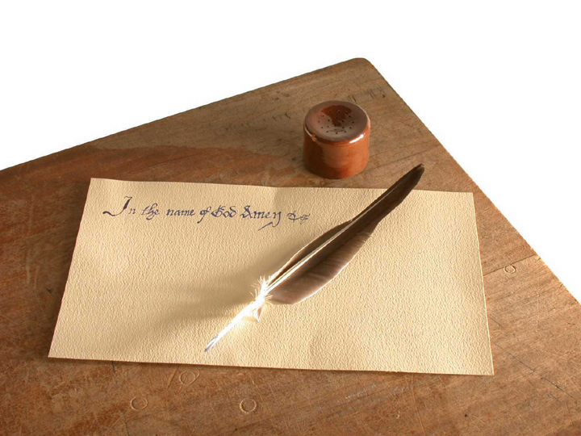
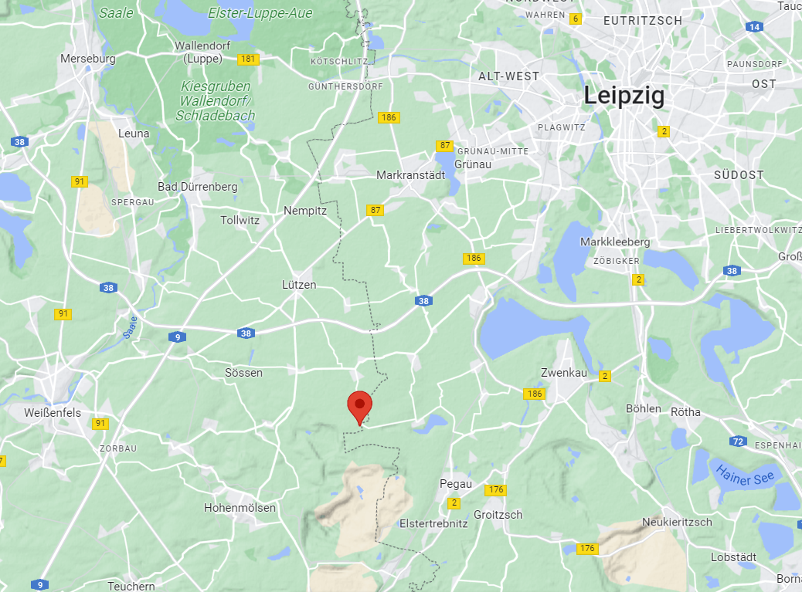
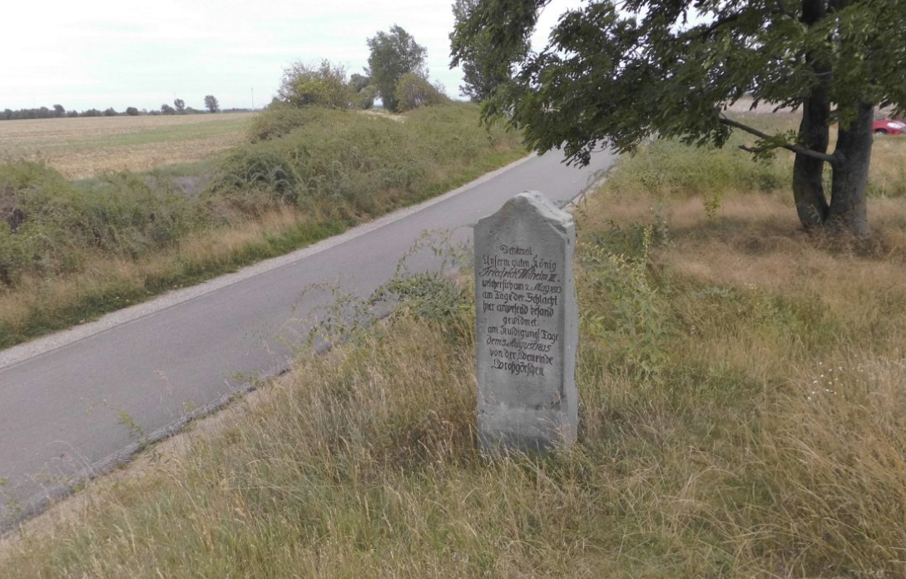
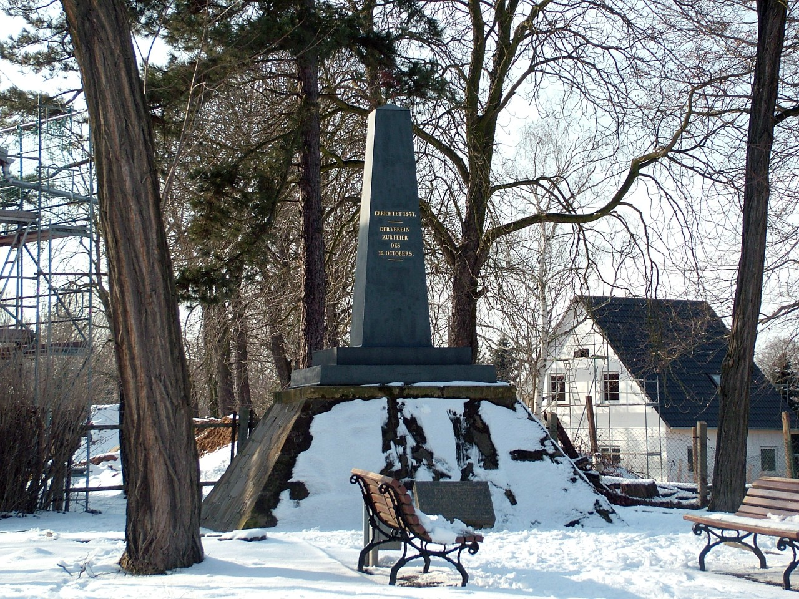
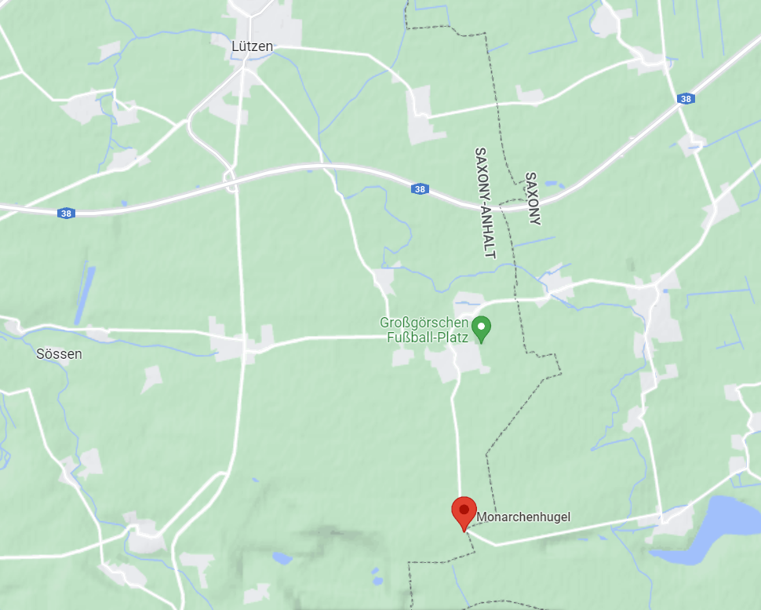
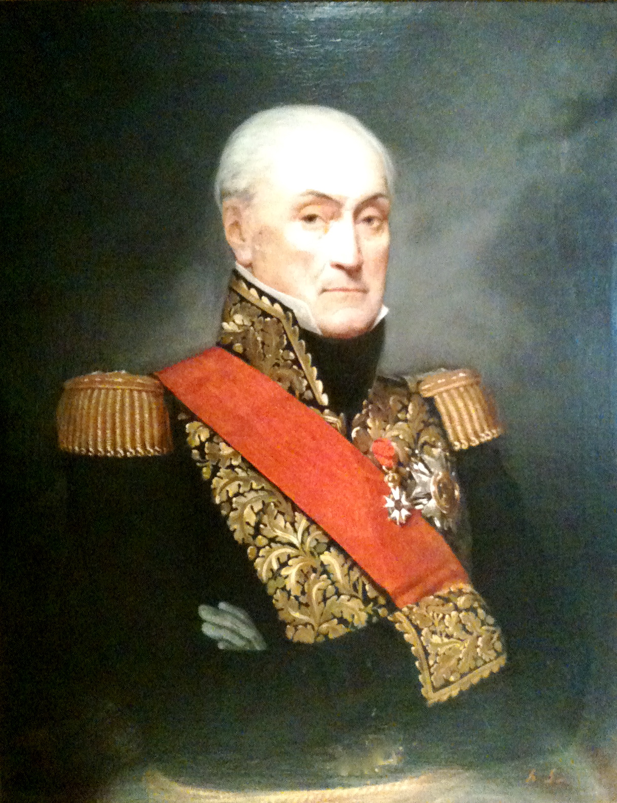
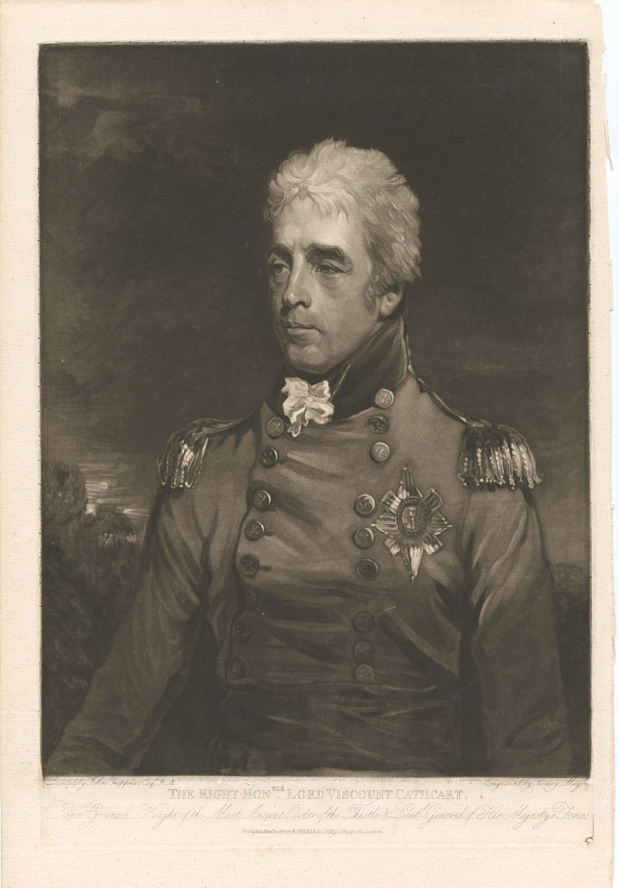

뤼첸 전투 (1) - 군주들의 언덕에서
게시: 2022-09-05T06:30:35+09:00
흔히 장군들이 아무렇게나 구술하면 그에 따라 병사들은 밤새도록 행군을 하며 고생한다고들 하지만, 적어도 5월 1일 밤 ~ 5월 2일 새벽 비트겐슈타인에게 그건 억울한 비난이었습니다. 비트겐슈타인은 거의 한숨도 못자고 상세한 병력 이동 명령을 작성해서 각 부대에 전달했고, 자신도 나폴레옹을 빠뜨릴 함정을 만들기 위해 자신의 부대를 이끌고 이동했습니다. 비트겐슈타인은 밤 늦게까지 들어오는 최신 정보를 파악한 뒤 특유의 꼼꼼함을 살려, 각 주요 지휘관마다 부대를 어느 장소로 몇시까지 이동시키도록 세세한 명령서를 따로따로 작성했습니다. GPS나 무선통신은 커녕 항공지도나 타자기도 없던 시절, 거위 깃털과 잉크 그리고 거친 종이만으로 지휘관의 의사를 정확하게 전달하는 것은 쉽지 않은 일이었습니다. 어두운 등불 밑에서 지친 서기들을 데리고 명령서를 작성하고 검토한 뒤 전령을 통해 편지를 보내는 것은 굉장히 스트레스 받는 격무였습니다.

(당시 군대의 행군 특성상, 긴급한 행군 명령서는 꼭 야간에 작성되어야 했습니다. 덕분에 당시 참모들을 도와 각종 서류를 작성했던 서기들은 모자라는 잠, 불편한 야전 탁자, 어두운 촛불에 시달리며 거친 종이에 자주 말썽를 일으키는 거위깃털펜으로 힘겹게 문서 작업을 해야 했습니다. 서기가 명령서 작성을 얼마나 재빨리 정확하게 하느냐는 군대 작전 전체의 성패를 판가름할 수 도 있는 중요한 업무였습니다.) 군대의 경쟁력은 다양한 곳에서 나올 수 있습니다만, 똑똑한 참모 장교들과 재빠르고 읽기 쉬운 필체를 가진 서기들, 그리고 정확하고 풍부한 지도도 당시 군대에겐 굉장한 차별력을 주는 요소였습니다. 당시 유럽의 관료 사회는 아직도 고전시대처럼 문장으로 모든 것을 표현할 수 있어야 한다는 강박관념에 사로잡혀 있다보니, 간단한 그림으로 표현하면 훨씬 더 명확하고 이해하기 쉬울 수도 있는 것들도 모두 장황한 문장으로 기술되었습니다. 그리고 프로이센군에게나 러시아군에게나 모두 낯선 작센 지명이 모두 필기체로 씌여있다 보니 뜻밖의 착오가 일어나기도 했습니다. 결국 그런 사소한 표기 착오 하나가 뤼첸 전투의 방향을 바꾼 원인으로 지목되기도 했습니다만, 그건 나중에 보시겠습니다. 당장 명령서를 작성하는 비트겐슈타인의 두뇌도 컴퓨터와는 거리가 멀었고 좁은 길과 복잡한 냇물 및 관개로가 얽혀있는 그 일대의 지도를 다 정확히 이해하고 있지도 못했습니다. 그러다보니 비트겐슈타인의 명령서가 아무리 100% 정확하게 씌여졌고 그 명령서를 받은 부대가 아무리 정확하게 명령대로 움직여도 이런저런 문제점이 생길 수 밖에 없었습니다. 특히 이 새벽 부대 이동의 핵심은 각 부대들이 엘스터(Elster) 강을 건너는 것이었는데, 엘스터 강은 대부분의 수역이 꽤 깊어서 다리가 있어야 건널 수 있었습니다. 많은 부대들이 혼잡을 일으키지 않고 제한된 수의 다리를 이용하려면 각 부대들이 기계적인 정확성으로 이동해야 했는데, 그건 절대 쉬운 일이 아니었습니다. 당장 5월 2일 새벽 5시, 밤새도록 어두운 밤길을 걸어 페가우(Pegau) 서쪽으로 이동하던 블뤼허 휘하의 부대 일부는 츠벤카우 남서쪽으로 이동하던 요크(Yorck) 장군 휘하의 일부 부대와 딱 뒤엉켜버렸습니다. 그나마 모두 프로이센군이었던 덕분에 어두운 밤길에 서로를 적군으로 오인하여 총격전이 벌어지지 않은 것이 다행이었지만, 좁은 도로 위에서 사단급 병력들이 뒤엉키다보니 이 뜻하지 않은 교통 적체를 해소하는데 무려 4시간이나 걸렸습니다. 이런 사태는 여기에만 국한되지 않았습니다. 5월 2일 몇 시간 뒤에 결전을 벌일 연합군 병사들은 전혀 쉬지 못하고 밤새도록 혼란스러운 행군 속에서 진을 빼야 했습니다. 비트겐슈타인은 정말 바빴습니다. 블뤼허와 요크의 부대들이 일으킨 교통정체 현장에도 나타나 격려의 덕담을 한 비트겐슈타인은 곧 이어 그로잇슈(Groitzsch)와 페가우 사이에 짜르와 프로이센 국왕이 나타났다는 말을 듣고 그 군주들에게 경의를 표하기 위해 새벽길에 말을 달려야 했습니다. 알렉산드르와 프리드리히 빌헬름은 보르나(Borna)에 있다가 병력들이 작전을 위해 움직이기 시작했다는 소식을 새벽 2시 경 듣고는 이 절호의 구경거리(?)를 놓칠 수 없다며 거기에 새벽 4시 30분에 나타난 것입니다. 보르나에서 페가우까지는 약 20km 정도의 거리니까, 밤길임을 감안하면 나름 정말 열심히 말을 달린 셈이었습니다. 이 군주들의 노력은 헛되지 않았습니다. 알렉산드르와 프리드리히 빌헬름은 비트겐슈타인과 회동한 이후, 페가우 주민들이 날라온 간단한 음식을 먹어가며 새벽과 아침 내내 그들의 눈 앞으로 지나가는 부대들을 실컷 구경하다 아침 10시 30분 경 자리를 옮겼습니다. 실제로 전투를 눈 앞에서 볼 수 있는 아주 좋은 장소를 찾았다는 소식이 들어왔기 때문이었습니다. 맨 처음 그 명당자리를 찾은 것은 블뤼허의 참모 그롤만(Grolman) 소령이었습니다. 군주들께서 병사들이 피흘리며 싸우는 것을 구경하실 자리를 구하는 것은 쉽지 않은 임무였습니다. 적과 너무 멀면 아무 것도 보이지 않는데다 용맹한 군주인 자신의 용기를 무시하는 것이라고 군주들이 언짢게 생각할 가능성이 있었습니다. 그렇다고 너무 가까운 곳에 위치하면, 1km 가까이 튀어다니는 대포알에 군주들이 죽거나 다칠 수도 있었습니다. 그러니 적당히 약한 적군을 적당한 거리에 두고 내려다보는 고지를 찾아야 했습니다. 군주들이 싸움 구경하기 좋다는 언덕은 뤼첸 남쪽 약 7km 정도의 살짝 솟은 언덕이었습니다. 알렉산드르와 프리드리히 빌헬름이 임시 사령부를 차렸던 이 언덕은 나중에 모나쉔휘겔(Monarchenhügel, 글자 그대로 군주의 언덕)이라고 이름이 붙여지게 되었습니다. 그 일대의 지형은 남쪽의 나지막한 고지로부터 뤼첸까지 매우 완만한 경사를 이루는 평야였습니다. 따라서 거기가 가장 가까이서 싸움 구경을 하기 좋은 명당이 확실했습니다.

(여기가 뤼첸 전투의 모나쉔휘겔의 위치입니다. 보시다시피 사실상 고지라고 보기는 어려운 평평한 곳으로서, 남쪽에 펼쳐진 고원 지대의 끄트러미 정도에 해당합니다.)

(이 뤼첸 전투의 모나쉔휘겔도 나름 의미가 있는 곳이다보니, 여기에도 기념비가 세워져 있습니다. 자세히 보시면 1813년 5월이라는 단어가 보입니다.) 사람이 해발 0m의 평지에 섰을 때, 눈에 보이는 지평선까지의 거리는 생각 외로 짧습니다. 다음과 같은 공식에 의해 쉽게 구할 수 있습니다. 눈에 보이는 지평선까지의 거리 km = (눈높이 cm / 6.752)의 제곱근
(지구는 둥글기 때문에, 사람이 물 속에 들어가 눈만 수면에 내밀고 있다면 눈과 수평선과의 거리는 0cm입니다. 거기서 고개를 빼서 목까지만 수면 밖으로 내놓아도 눈에 보이는 수평선까지의 거리는 1.6km 정도로 확 늘어납니다.) 그러니 175cm의 신장을 가진 사람의 눈높이가 대충 161cm라고 하면, 눈에 보이는 지평선까지의 거리는 4.88km입니다. 만약 키가 매우 커서 185cm라서 눈높이도 대략 170cm라고 하면 지평선까지의 거리는 5km입니다. 만약 그 사람이 서있는 곳이 해발 10m라면 그 거리는 13km 이상으로 확 늘어납니다. 사방이 평야인 지역에서는 불과 10m 높이라고 해도 상당한 고지였습니다. 아우스테를리츠 전투에서 나폴레옹이 미끼로 썼던 프라첸(Pratzen) 고지의 높이도 바로 딱 10~12m 정도에 불과했습니다.

(구글에서 Monarchenhügel을 검색하면 라이프치히 인근에 Monarchenhügel이라는 곳이 나오고, 높이가 무려 159m에 달하는 고지로 나옵니다. 그러나 이건 라이프치히 남동쪽에 위치한 곳으로서, 1813년 10월 다시 나폴레옹과 붙은 연합국 군주들이 자리를 잡은 곳으로서, 5월 뤼첸 전투의 모나쉔휘겔과는 다른 곳입니다.) 거기 서서 뤼첸 일대를 살펴보니, 적군은 저 멀리 바이센펠스에서 뤼첸으로, 그리고 라이프치히로 이어지는 도로 위에서 꾸역꾸역 일어나는 먼지구름의 모습으로만 보였습니다. 이미 이곳저곳에서는 교전이 벌어지고 있었습니다. 가령 라이프치히 북서쪽에서는 밀고 들어오는 외젠 휘하 로리스통(Lauriston)의 제5 군단이 그 앞길을 막아서고 있던 클라이스트(Friedrich Graf Kleist von Nollendorf) 장군의 5천 병력을 밀어붙이는 전투가 벌어지고 있었습니다. 클라이스트는 무리하지 않고 비트겐슈타인에게 지령받은 대로 조금씩 후퇴하여 프랑스군을 유인하고 있었지요. 모나쉔휘겔 언덕 위에 선 사람들의 눈에도 여기저기 멀리서 벌어지는 포격전의 연기는 보였지만, 건조한 토질과 탁 트인 지형 탓인지 대포 소리는 들리지 않았습니다. 전투는 아쉽게도 저 멀리서 벌어지는 모양이었습니다.

(클라이스트 장군입니다. 그는 나폴레옹보다 7살 연상의 베를린 출신 전형적인 프로이센의 융커 귀족이었습니다. 그는 예나 전투에도 참전했었고 나중에 라이프치히 전투에도 참전했습니다. 이후 그는 당시 유명한 요새였던 에르푸르트(Erfurt)의 포위에 투입되었고, 결국 다음해인 1814년 초에 그 항복을 받아내었습니다. 이 동상은 쾰른에 있는 프리드리히 빌헬름 3세의 기념비 아래를 장식하고 있는 클라이스트의 동상입니다.)
그러나 바로 눈 앞에도 규모는 작지만 군주들의 흥미를 끌만한 적당한 크기의 적군이 보였습니다. 모나쉔휘겔 바로 북쪽의 평원 풍경은 큰 숲 등으로 막힌 것 없이 탁 트인 농경지였습니다. 그러나 평원치고는 의외로 굴곡진 지형이라서 언덕과 움푹 파인 곳들이 있었고, 특히 두둑히 흙이 쌓인 밭 사이의 움푹 꺼진 길들과 시냇물 등으로 인해 모든 것이 다 눈으로 보이지는 않았습니다. 그래도 모나쉔휘겔에서 불과 3km 떨어진 평원 한가운데 자리잡은 4개의 마을은 잘 보였습니다. 작고 초라한 농가들로 이루어진 이 작은 마을들은 대략 6.5 km^2의 사다리꼴 모양을 이루고 있었는데, 이 마을들은 연합군이 가진 지도에는 아예 이름도 표기되어 있지 않았습니다. 그 마을들의 이름은 그로스괴르쉔(Großgörschen), 클라인괴르쉔(Kleingörschen), 라나(Rahna), 그리고 카이(Kaj)였습니다.

(뤼첸과 모나쉔휘겔 사이에 있는 4개 마을의 집합체입니다. 뤼첸과 모나쉔휘겔 사이의 거리가 7km 밖에 안된다는 사실을 잊지 마십시요.)

(이 4개 마을의 현재 항공 사진입니다.)
고지에서 망원경을 들고 보니 전진하는 프랑스군의 후위대임이 분명한 소수의 부대가 이 마을에 주둔하고 있었습니다. 프리드리히 빌헬름의 참모 뮈플링(Karl Freiherr von Müffling) 대령이 직접 정찰대를 이끌고 알아보니 약 2천의 프랑스군이 그야말로 방심한 상태로 미적거리고 있었습니다. 심지어 4개 마을 중 모나쉔휘겔에 가장 가까운 마을인 그로스괴르쉔에는 프랑스군이 아예 경비병조차 두지 않고 있었습니다. 코삭 기병들에게 잡혀온 포로를 취조해보니 여기에 주둔한 것은 프랑스군의 후위 부대가 맞았고, 지휘관은 수암(Joseph Souham) 장군의 제8 사단 소속이라고 했습니다. 싸움 구경을 원하는 군주들에게 이보다 더 좋은 장소, 더 좋은 상황은 만들기 어려웠습니다.

(수암(Joseph Souham) 장군입니다. 나폴레옹보다 9세 연상이었던 그는 전형적인 프랑스 혁명군의 장군으로서, 일반 사병으로 오랜 시간 복무하다 혁명군에 참여하여 능력 하나로 순식간에 장군이 되었습니다. 그러나 나폴레옹의 정적 모로 장군 밑에서 주로 복무했던 관계로 나폴레옹이 정권을 잡은 1800년부터 무려 9년간 현역 보직을 얻지 못하고 반은퇴 생활을 해야 했습니다. 그러다 바그람 전투 이후 인재 부족에 직면한 나폴레옹은 수암 장군까지 다시 기용했는데, 수암 장군은 주로 스페인에서 싸웠으며 웰링턴과도 호각지세로 잘 싸워 스페인의 프랑스 장군들 중 유일하게 전혀 패배하지 않은 장군으로 남았습니다. 그는 나폴레옹의 백일천하 때 부르봉 왕가 편에 섰으며 그에 따라 합당한 우대를 받았습니다.) 이 소식은 즉각 비트겐슈타인에게 전해졌고, 비트겐슈타인은 페가우에서 말을 달려왔고, 때마침 알렉산드르와 프리드리히 빌헬름도 모나쉔휘겔에 도착했습니다. 이떄가 11시 경이었습니다. 비트겐슈타인은 저 4개 마을의 상황을 군주들에게 설명했습니다. 이때 마침 영국 대사인 캐쓰카트 (William Schaw Cathcart, 1st Earl Cathcart) 장군도 현장에 있었는데, 그는 비트겐슈타인이 "1시간 안에 저 아래 마을의 프랑스군 부대를 폐하들께 바치겠다"라고 호언장담하는 소리를 들었습니다. 이런 무시무시한 대화가 바로 3km 밖에서 진행될 때, 이 마을들에 분산되어 있던 프랑스군은 러시아의 짜르가 바로 옆에 와있다는 것을 전혀 모르고 있었습니다. 하지만 모르는 것은 비트겐슈타인도 마찬가지였습니다. 그가 결전을 앞둔 애피타이저 정도로 생각했던 이 작은 프랑스군 부대는 수암 장군의 제8 사단 소속 일부 부대 2천이 아니었습니다. 거기에는 수암 장군 본인을 포함한 제8 사단 1만2천명 전원이 주둔하고 있었습니다.

(캐쓰카트 장군입니다. 나폴레옹보다 14세 연상이었던 그는 전형적인 영국 귀족으로서 런던에서 태어나 이튼 학교를 다녔고, 러시아 대사를 지낸 아버지를 따라 10대 후반에서 20대 초반인 1773년에서 1777년까지 페체르부르크에서 지냈습니다. 젊은 시절에는 미국 독립전쟁에서 싸웠습니다. 잠깐 네덜란드와 북부 독일 하노버 지역에서 싸웠을 뿐 실전 경험은 많지 않았고, 그의 아버지처럼 그도 러시아 대사로 임명되어 연합군 사령부를 따라다녔습니다. 그는 87세까지 장수했습니다.) Source : The Life of Napoleon Bonaparte, by William Milligan Sloane Napoleon and the Struggle for Germany, by Leggiere, Michael V
https://en.wikipedia.org/wiki/Battle_of_Austerlitz https://science.howstuffworks.com/question198.htm https://de.wikipedia.org/wiki/Monarchenh%C3%BCgel https://en.wikipedia.org/wiki/Friedrich_Graf_Kleist_von_Nollendorf https://en.wikipedia.org/wiki/Karl_Freiherr_von_M%C3%BCffling https://en.wikipedia.org/wiki/Joseph_Souham https://en.wikipedia.org/wiki/William_Cathcart,_1st_Earl_Cathcart https://cs.wikipedia.org/wiki/William_Cathcart,_1._hrab%C4%9B_Cathcart